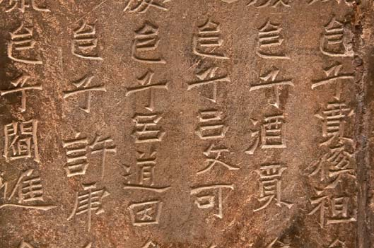

Una breve historia del libro
1.Introducción
La comunicación humana comenzó a desarrollarsedesde los primeros tiempos a partir de formasgestuales y formas orales. Ante la necesidad deconservar en la memoria colectiva e individual todotipo de información, se fueron generando diferentesfórmulas lingüísticas, rituales, musicales, pictóricas,etc. y métodos nemotécnicos (cuerdas de colores,nudos, muescas en palos, tejidos bordados, etc.),que se fueron transmitiendo de generación engeneración hasta que la mayor complejidad dela organización de los grupos y las sociedadespropició la aparición de la escritura.
El origen de la escritura podemos vincularlo al profundo cambio que supuso el paso de las sociedades cazadoras-recolectoras a las sociedades agricultoras y ganaderas. Este proceso no tuvo lugar de forma sincrónica en las cinco civilizaciones en que se fue desarrollando (Mesopotamia, Egipto, Valle del Indo, China y Mesoamérica) y, entre las culturas candidatas a ser las primeras en utilizar la escritura, suele destacarse la cultura sumeria.
La aparición del alfabeto constituyó un logro decisivo después de un largo proceso, tratando de articular las palabras en sonidos simples y sustituir los sistemas de representación de objetos y símbolos por unidades fonéticas. Los especialistas suelen considerar el alfabeto fenicio como el primero que se utilizó de forma más generalizada. En este sistema alfabético, los 22 signos de que constaba se combinaban adecuadamente para representar todas las modulaciones lingüísticas. Los antiguos egipcios ya habían ideado un sistema de jeroglíficos que tenían naturaleza alfabética, pero nunca fueron utilizados para una escritura puramente alfabética, sino como una guía de pronunciación. Actualmente, se cree que el primer sistema alfabético fue desarrollado hacia el 2000 a. C. por poblaciones semíticas de la zona central de Egipto y que, a continuación, se difundió hacia el norte durante más de cinco siglos, siendo luego desarrollado y utilizado por los fenicios, que lo propagaron por todo el Mediterráneo. A este alfabeto semítico le siguieron cuatro variantes: semítico meridional, cananeo, arameo y el griego arcaico. Los griegos desarrollaron signos vocálicos para adaptarlo a su lengua y originaron el primer alfabeto escrito de izquierda a derecha. Asimilado posteriormente por los romanos, se constituyó finalmente el alfabeto latino que es el más utilizado hoy en día.
Para hacer frente al reto de preservar y transmitir la cultura, tanto en el espacio como en el tiempo, la humanidad ha tenido que encontrar la manera de garantizar la conservación del soporte material y la integridad de los contenidos, y también buscar la forma de mantener la finalidad o intención concebidas inicialmente. Debido a ello, a lo largo de la historia se utilizaron diversos soportes con características muy diferentes respecto a su conservación, capacidad de transmisión de contenidos, intencionalidad, etc. (paredes de cuevas, megalitos, tejidos vegetales, pieles, madera, arcilla, papel). En lo que se refiere a los materiales propiamente utilizados para la escritura, en un primer momento predominó la piedra, la corteza de árboles y las hojas de plantas, el hueso y las conchas, entre otros; posteriormente, tablillas de arcilla, pieles, telas, papiro, pergamino, seda, papel y, finalmente, materiales plásticos.
El libro tanto conceptual como materialmente, es sin duda un logro único, una herramienta definitiva que ha permitido la conservación y la difusión de los avances de la humanidad, su historia, sus creencias, etc. Ha facilitado el intercambio de información a todos los niveles y ha permitido desarrollar de manera muy importante la comunicación entre las personas. Por otra parte, es frecuente, entre los expertos, llevar el concepto de libro hasta los primeros tiempos de la humanidad, hablando así de libro prehistórico u oral y de libro histórico o escrito.
La palabra libro derivada del latín liber, libri (membrana, corteza secundaria de los árboles), figura en el Diccionario de la R.A.E como: “conjunto de muchas hojas de papel u otro material semejante que, encuadernadas, forman un volumen”. Una definición más acorde con los últimos avances tecnológicos (e-books, audiolibros, etc.) debe referirse a un soporte relativamente permanente, multiplicable, y constituido por una o varias partes iguales, en las cuales se dispone del texto de un documento o una obra en su totalidad o parcialmente.
La forma material del libro ha ido evolucionando a lo largo del tiempo según las necesidades de información y materiales disponibles. Los primeros soportes empleados fueron la piedra y las tablillas de arcilla; luego se fue generalizando el rollo de papiro egipcio. En la Edad Media el material más utilizado en Europa fue el pergamino. Un conjunto de hojas de pergamino eran cosidas y encuadernadas formando los códices, los cuales fueron evolucionando hasta los libros que hoy conocemos. En esta evolución, acontecimientos importantes fueron la generalización del uso del papel, la creación de la imprenta y, finalmente, con los soportes informáticos, la aparición del libro digital o electrónico.